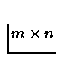

--> A=[2 1 4;5 -8 2] A = ! 2. 1. 4. ! ! 5. - 8. 2. ! --> b=ones(2,3) b = ! 1. 1. 1. ! ! 1. 1. 1. ! --> A.*b ans = ! 2. 1. 4. ! ! 5. - 8. 2. ! --> A*b' ans = ! 7. 7. ! ! - 1. - 1. !Notice that the ones operator with two real numbers as arguments separated by a comma creates a matrix of ones using the arguments as dimensions (same for zeros). Matrices can be used as elements to larger matrices . Furthermore, the dimensions of a matrix can be changed.
--> A=[1 2;3 4] A = ! 1. 2. ! ! 3. 4. ! --> B=[5 6;7 8]; --> C=[9 10;11 12]; --> D=[A,B,C] D = ! 1. 2. 5. 6. 9. 10. ! ! 3. 4. 7. 8. 11. 12. ! --> E=matrix(D,3,4) E = ! 1. 4. 6. 11. ! ! 3. 5. 8. 10. ! ! 2. 7. 9. 12. ! -->F=eye(E) F = ! 1. 0. 0. 0. ! ! 0. 1. 0. 0. ! ! 0. 0. 1. 0. ! -->G=eye(4,3) G = ! 1. 0. 0. ! ! 0. 1. 0. ! ! 0. 0. 1. ! ! 0. 0. 0. !Notice that matrix D is created by using other matrix elements. The matrix primitive creates a new matrix E with the elements of the matrix D using the dimensions specified by the second two arguments. The element ordering in the matrix D is top to bottom and then left to right which explains the ordering of the re-arranged matrix in E.
The function eye creates an

matrix with 1 along the main diagonal (if the argument is a matrix E , m and n are the dimensions of E ) .Sparse constant matrices are defined through their nonzero entries (type help sparse for more details). Once defined, they are manipulated as full matrices.